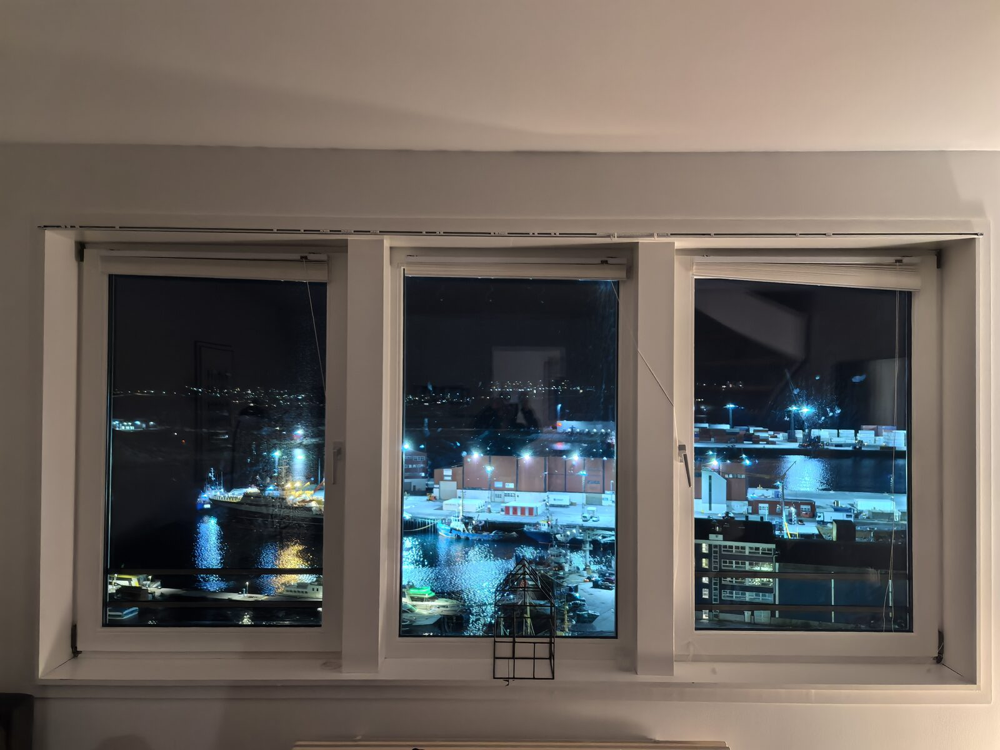
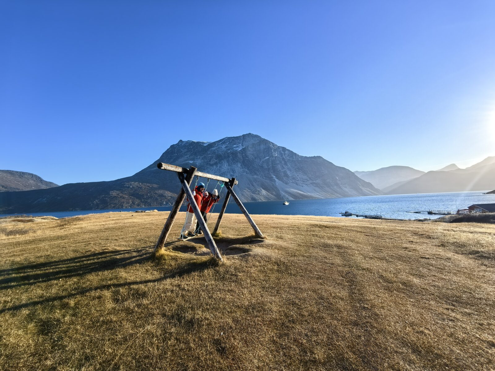
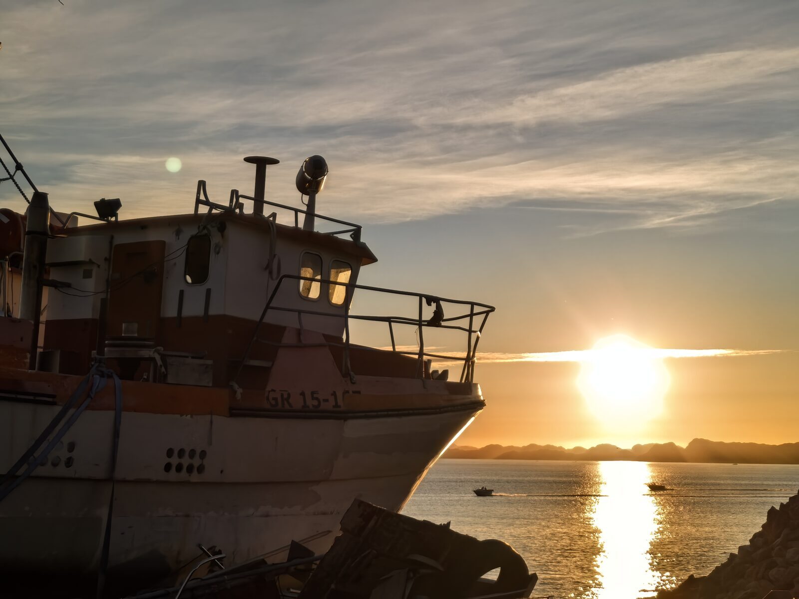
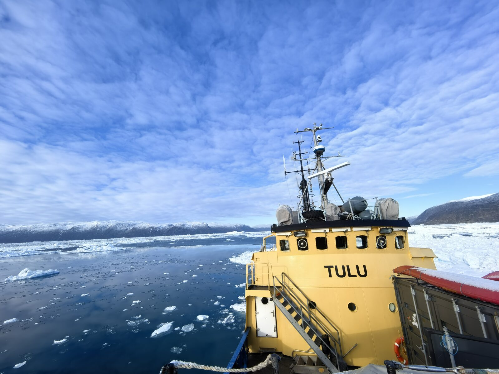
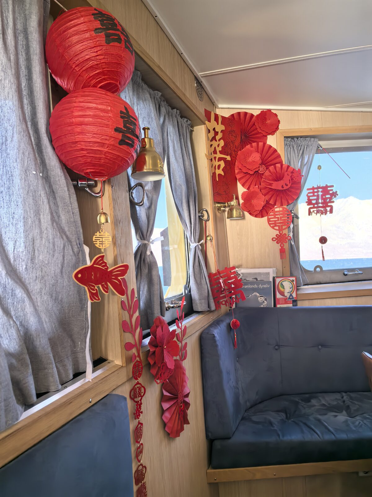
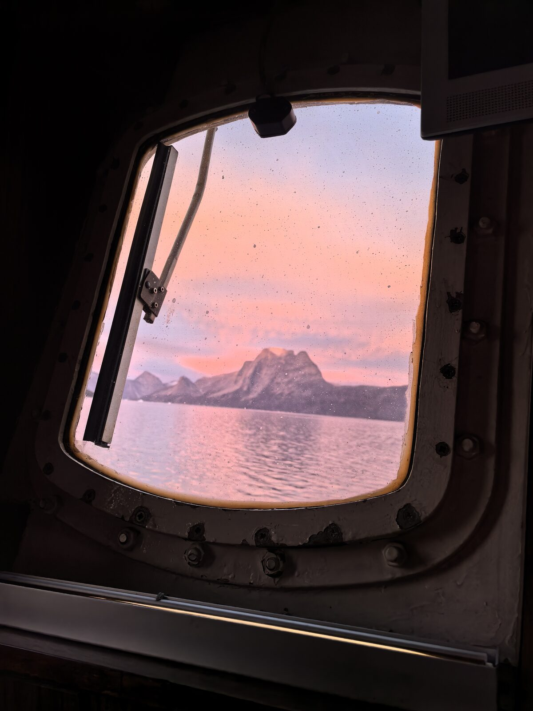
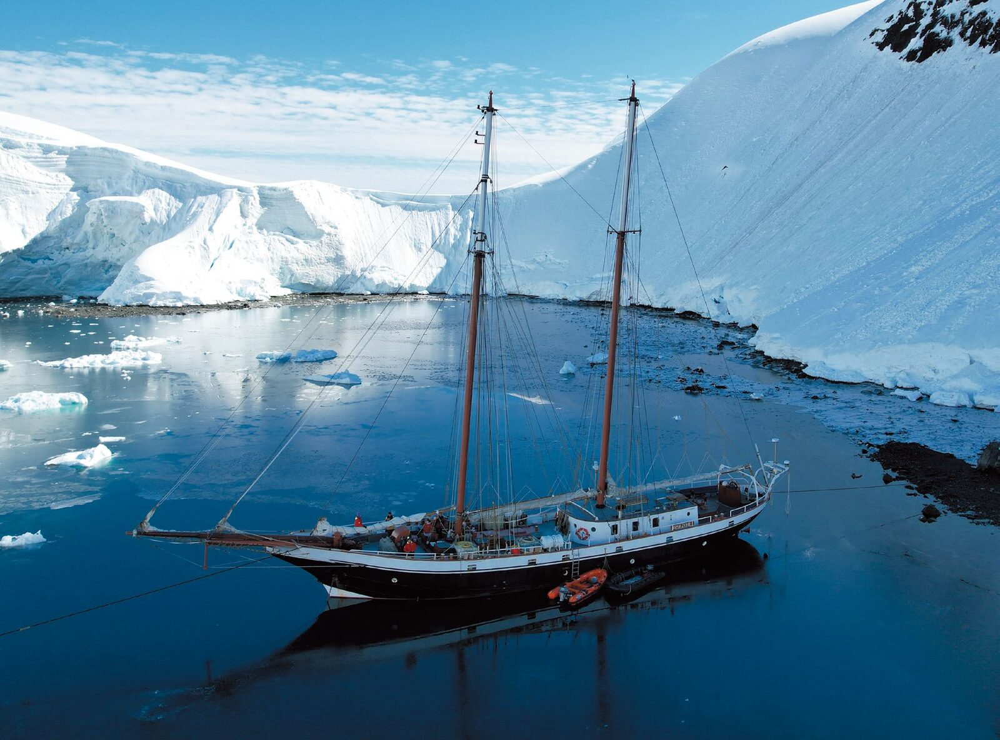

九月末，努克峡湾两岸的苔原由绿变金。
蓝莓、岩高兰、鹿蹄草爬满低地；风一吹，驯鹿的踪影在山脊上若隐若现。
白昼仍有十来个小时：徒步高处看峡湾，或在船边静静手钓，等极光归来。
清晨六点，天还没真正亮起。
从公寓的三面窗户望出去，码头的灯一盏盏熄掉，Tulu 停在最里侧，黄色的船身在灰蓝色里先一步醒来。
楼下的咖啡店开门，店主是位戴着渔夫帽的姑娘，她笑着说，今晚的天气预报是晴。
登船前，我先看见了那对红色的"囍"字 —— 它被贴在客舱的窗边，像是谁早就料到了我们要来。

九月末，努克峡湾两岸的苔原由绿变金。
蓝莓、岩高兰、鹿蹄草爬满低地；风一吹，驯鹿的踪影在山脊上若隐若现。
白昼仍有十来个小时：徒步高处看峡湾，或在船边静静手钓，等极光归来。

苔原高处俯瞰峡湾，驯鹿与北极狐的足迹。

船边静水上的北极鳕与比目鱼，片刻回到童年。

甲板烤炉，船长的肉饼，冰山从船舷缓缓飘过。
Tulu 是一艘因纽特家族的工作船。老父亲掌舵，母亲管厨房，儿子是大副。从早到晚的秩序都是他们的。
他们不把客人当客人。他们不会讲一套专业导游的台词，不会在晚餐时演奏传统乐器给你看。他们只是把船开好、把饭做好、把你送到天光最好的地方。
船上有来自中国的辣椒面、老干妈、泡面和酸辣粉，数量有限。
客舱窗边挂着红灯笼和金鱼剪纸 —— 去年某位客人留下的。
老船长没摘下来。

努克峡湾由四条支湾编织而成。我们的船沿途停靠四处 —— 无人村、射击湾、隐秘餐厅、神山脚下。
荒废的因纽特聚落，彩色木屋仍在，徒步可达山脊。
北极野兔与驯鹿的领地，因纽特野外狩猎课程。
徒步与手钓之后，当地做法烹饪我们当日的渔获。

努克地标的锯齿山，船长知道一处秘密老鹰巢穴。
白昼仍长，徒步与航行不受限，苔原正处金黄峰值。
极光 KP 窗口活跃，北向峡湾视野开阔，追光成功率极高。
海冰尚未锁湾，船只通达自如，首场雪亦在月末才偶现。

我们不做"服务"，只做"共历"
我们的船长熟悉每一道峡湾的暗流，向导能识别某只座头鲸和她的幼崽。外籍帆船厨师深谙当地的极地风味，专属的中餐主厨更懂得熨帖你的中国胃。
我们的所有航行都严格遵循丹麦海事安全规范，冲锋舟、救生装备、户外系统一应俱全。
但最坚固的保障，是团队十几年极地经验沉淀出的直觉——何时该前进，何时该等待，何时该关掉引擎，让风说话。
我们深知，帆船已是北极最温柔的抵达方式，因此更以敬畏之心，积极与当地社区合作，不留痕迹，只留故事。
接近 1:1 的人员配比，只为 8–12 位旅人安静护航

二十余年野外科研足迹遍及青藏高原、帕米尔与北极圈。曾五十余次深入南极、常驻北极三年，持冲锋舟驾驶与急救资质。译著包括《植物大发现》《荒野守望》《寂静的石头》《聆听冰川》等。Whalebay Expeditions 联合创始人。

2004 至 2006 年驻守南极中山站，从事极光观测、冰芯钻取与野外搜救，获国家海洋局"优秀南极考察队员"。2016 年起专注极地探险，足迹遍及南北极点、格陵兰与斯瓦尔巴。中国极地向导联盟（CPGA）发起人，Whalebay Expeditions 联合创始人。